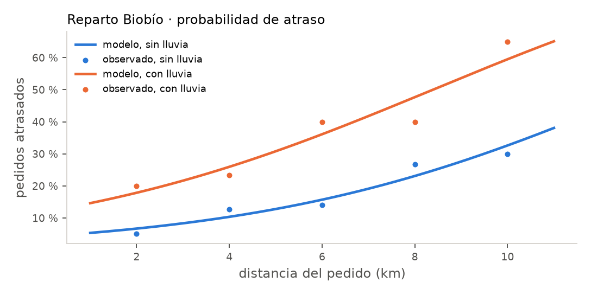
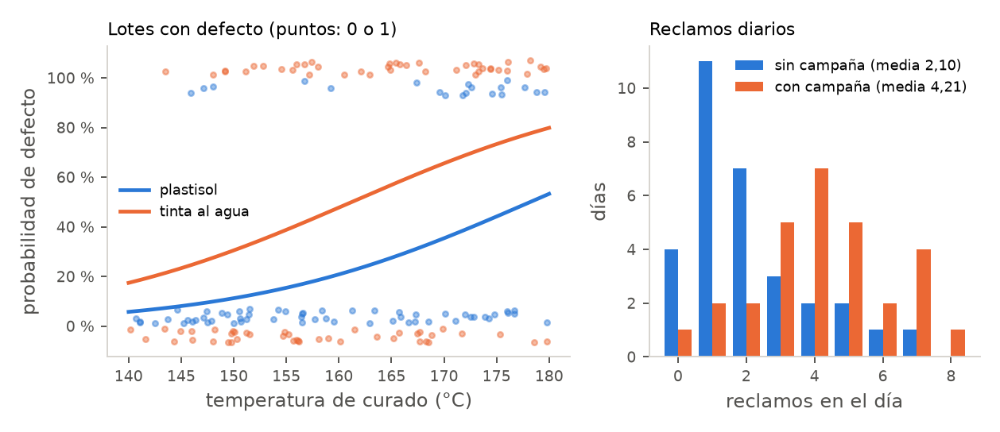

![Camilo Merino]()
Unidad 11 · Modelos lineales generalizados: logística y Poisson
Qué vas a poder hacer. Elegir la familia y el enlace de un modelo según el tipo de respuesta;
ajustar una regresión logística y una de Poisson con statsmodels; traducir cada coeficiente a un
odds ratio o a una razón de tasas; calcular una probabilidad o un conteo predicho; probar un
coeficiente con Wald y un grupo de coeficientes con la razón de verosimilitud; detectar la
sobredispersión y corregir los errores estándar cuando aparece.
Lo que necesitas antes. De la unidad 1, las cinco piezas de una prueba (hipótesis, estadístico, distribución bajo \(H_0\), valor p, conclusión). De la unidad 4, el estadístico \(G\) de una tabla de contingencia. De la unidad 10, leer una tabla de coeficientes de regresión múltiple y la idea de «a igualdad de las demás variables».
Tiempo. Unas 6 horas: 2,5 de lectura con el ejemplo y el cuaderno, 3,5 de práctica.
1. La idea · cuando la respuesta no es una medida
La regresión de la unidad 10 supone que la respuesta es continua, que su varianza es la misma en todas partes y que el error es normal. Dos respuestas muy comunes en una empresa rompen las tres cosas:
- Un sí o un no. ¿El pedido llegó atrasado? ¿El lote salió con defecto? ¿El cliente renovó? La respuesta vale 0 o 1 y lo que interesa es la probabilidad \(p\) de que valga 1.
- Un conteo. Reclamos en el día, atascos en un turno, accidentes en el año. La respuesta es 0, 1, 2, … y lo que interesa es el promedio \(\mu\).
Si a esas respuestas se les ajusta una recta por mínimos cuadrados pasan tres cosas malas: la recta predice probabilidades bajo 0 o sobre 1 y conteos negativos; la varianza no es constante (en un 0 o 1 la varianza es \(p(1-p)\), en un conteo de Poisson es igual a la media), y los valores p de la tabla dejan de valer. El modelo lineal generalizado (GLM) arregla las tres cosas sin perder lo bueno de la regresión: una ecuación lineal en los predictores, coeficientes que se interpretan uno por uno y pruebas para cada uno.
2. Las tres piezas de un GLM
Todo GLM se arma con tres decisiones:
- Componente aleatoria. Qué distribución tiene la respuesta dado el valor de los predictores: normal, binomial (sí o no, o \(k\) éxitos en \(n\)), Poisson (conteos). Fija cómo se relacionan la media y la varianza.
- Predictor lineal. La parte que ya conoces: \(\eta = \beta_0 + \beta_1 x_1 + \dots + \beta_k x_k\).
- Función de enlace \(g\). Conecta la media de la respuesta con el predictor lineal: \(g(\mu) = \eta\). Su trabajo es llevar la media, que vive en un rango restringido, a toda la recta real, donde puede vivir \(\eta\).
| Respuesta | Componente aleatoria | Enlace canónico | El coeficiente se lee como |
|---|---|---|---|
| Medida continua (minutos, kilos) | normal | identidad: \(\mu = \eta\) | cambio en la media |
| Sí o no; \(k\) de \(n\) | binomial | logit: \(\ln\frac{p}{1-p} = \eta\) | \(e^{\beta}\) es un odds ratio |
| Conteo sin tope | Poisson | log: \(\ln \mu = \eta\) | \(e^{\beta}\) es una razón de tasas |
La regresión lineal de la unidad 10 es el GLM normal con enlace identidad: no es otro método, es el caso particular. Lo que cambia en los otros dos es cómo se estima. Ya no se minimizan los cuadrados de los residuos; se buscan los \(\beta\) que hacen más probable lo observado (máxima verosimilitud). No hay fórmula cerrada en general: el computador itera (el algoritmo se llama IRLS) hasta converger. Con un solo predictor binario sí hay fórmula cerrada, y por eso el ejemplo y el caso empiezan ahí: se puede hacer a mano y comparar con Python.
Cuándo NO aplica tal cual. Si las observaciones no son independientes (mediciones repetidas del mismo cliente o del mismo lote), si la respuesta tiene más de dos categorías (se usa la logística multinomial u ordinal) o si los conteos tienen muchos más ceros de los que una Poisson permite.
3. Regresión logística
Probabilidad, odds y log-odds
Para una probabilidad \(p\), los odds son \(p/(1-p)\): cuántos «sí» hay por cada «no». Una probabilidad de 0,20 son odds de 0,25 (uno a cuatro); una de 0,50 son odds de 1. Los odds van de 0 a infinito; su logaritmo, el log-odds o logit, va de menos a más infinito, y eso es lo que el modelo iguala a una recta:
\[\ln\frac{p}{1-p} = \beta_0 + \beta_1 x_1 + \dots + \beta_k x_k = \eta \qquad\Longleftrightarrow\qquad p = \frac{1}{1 + e^{-\eta}}\]
La segunda forma (la función logística) es la que da la probabilidad predicha: se calcula \(\eta\) con los coeficientes y se pasa por la curva en S.
Cómo se lee un coeficiente
\(\beta_j\) es el cambio en el log-odds cuando \(x_j\) sube en 1, con el resto fijo. Como nadie piensa en log-odds, se exponencia:
\[OR_j = e^{\beta_j}\]
es el odds ratio: el factor por el que se multiplican los odds cuando \(x_j\) sube en 1. Un \(OR = 1{,}5\) es «los odds suben 50 %»; un \(OR = 0{,}8\) es «bajan 20 %»; \(OR = 1\) es «no cambian». Si \(x\) sube en \(c\) unidades, los odds se multiplican por \(e^{c\beta}\).
Lo que \(\beta\) no es: no es el cambio en la probabilidad. El efecto de \(x\) sobre \(p\) depende de dónde estás en la curva:
\[\frac{\partial p}{\partial x} = \beta\,p\,(1-p)\]
Es máximo cuando \(p = 0{,}5\) (vale \(\beta/4\)) y se achica cerca de 0 y de 1. El mismo odds ratio puede ser un salto de 3 puntos porcentuales para un pedido de bajo riesgo y de 11 para uno de riesgo medio. Por eso se informa el odds ratio y algunas probabilidades predichas en casos típicos.
Con un solo predictor binario, a mano
Si \(x\) vale 0 o 1, el modelo tiene dos parámetros y dos grupos, y la máxima verosimilitud reproduce las proporciones de cada grupo. Con la tabla 2 × 2 (\(a_1\) «sí» y \(b_1\) «no» cuando \(x = 1\); \(a_0\) y \(b_0\) cuando \(x = 0\)):
\[\hat\beta_0 = \ln\frac{a_0}{b_0} \qquad \hat\beta_1 = \ln\left(\frac{a_1/b_1}{a_0/b_0}\right) \qquad EE(\hat\beta_1) = \sqrt{\frac{1}{a_1}+\frac{1}{b_1}+\frac{1}{a_0}+\frac{1}{b_0}}\]
Es el odds ratio de la tabla de toda la vida. La intuición del error estándar: cada celda aporta \(1/\text{conteo}\), así que la celda más chica manda; con pocas fallas el coeficiente es impreciso, aunque la muestra total sea grande.
4. Inferencia en un GLM · Wald, devianza y razón de verosimilitud
Prueba de Wald para un coeficiente
\[z = \frac{\hat\beta_j}{EE(\hat\beta_j)} \;\sim\; N(0,1)\ \text{bajo}\ H_0: \beta_j = 0 \qquad IC_{95\%}(OR_j) = e^{\hat\beta_j \pm 1{,}96\,EE(\hat\beta_j)}\]
Es lo que statsmodels muestra en la columna z y P>|z|. El intervalo se calcula en la escala de
\(\beta\) y después se exponencia; por eso no es simétrico en torno al odds ratio. Si el intervalo del
OR contiene el 1, el predictor no es significativo al 5 %.
Devianza
La log-verosimilitud \(\ln L\) mide qué tan probable hace el modelo lo que se observó (es negativa; más cerca de 0 es mejor). La devianza es \(D = -2\ln L\) (medida contra el modelo saturado, que tiene un parámetro por observación): cumple el papel de la suma de cuadrados de los residuos.
- La devianza nula es la del modelo con solo intercepto.
- Con datos agrupados (muchos ensayos por fila, como pedidos por tramo de distancia), la devianza residual se compara con una \(\chi^2\) con \(n - p\) grados de libertad: si es mucho mayor que sus grados de libertad, el modelo no ajusta. Con datos individuales 0 o 1 esa comparación no sirve.
Prueba de razón de verosimilitud
Para comparar un modelo reducido con uno completo que agrega \(q\) coeficientes:
\[G = D_{\text{reducido}} - D_{\text{completo}} = 2(\ln L_{\text{completo}} - \ln L_{\text{reducido}}) \;\sim\; \chi^2_q \ \text{bajo}\ H_0\]
Contra el modelo nulo, \(G\) prueba si el modelo entero sirve (es el LLR del resumen de
statsmodels). Contra el modelo sin una variable, prueba esa variable. Con muestras chicas o
coeficientes grandes la razón de verosimilitud es más confiable que Wald. Con un predictor binario, \(G\)
es exactamente el estadístico \(G = 2\sum O\ln(O/E)\) de la tabla 2 × 2 de la unidad 4.
Para elegir entre modelos no anidados se usa el AIC \(= -2\ln L + 2k\) (\(k\) = número de parámetros): menor es mejor; diferencias menores que 2 no distinguen.
La prueba en cinco pasos
| Paso | En un GLM |
|---|---|
| Pregunta | ¿La variable \(x_j\) cambia la probabilidad (o la tasa), a igualdad del resto? |
| Hipótesis | \(H_0: \beta_j = 0\) (\(OR = 1\)) contra \(H_1: \beta_j \neq 0\) |
| Estadístico | \(z\) de Wald \(\sim N(0,1)\), o \(G \sim \chi^2_1\) |
| Valor p | \(2P(Z > \lvert z\rvert)\), o \(P(\chi^2_1 > G)\) |
| Conclusión | en el lenguaje del problema y con el tamaño: «la lluvia multiplica los odds de atraso por 3» |
Clasificar · la matriz de confusión
Una logística da probabilidades. Para decidir (revisar el lote o no, llamar al cliente o no) se fija un umbral: si \(\hat p \ge\) umbral se predice «sí». Cruzando lo predicho con lo real queda la matriz de confusión: verdaderos positivos (VP), falsos positivos (FP), falsos negativos (FN) y verdaderos negativos (VN). La exactitud es \((VP+VN)/n\); la sensibilidad, \(VP/(VP+FN)\), es la fracción de los «sí» reales que se detectan; la especificidad, \(VN/(VN+FP)\), la fracción de los «no» que se dejan pasar bien. Bajar el umbral sube la sensibilidad a costa de la especificidad; el umbral correcto lo fija el costo de cada error, no el 0,5.
5. Regresión de Poisson
El modelo
Para un conteo \(Y\) con media \(\mu\):
\[Y \sim \text{Poisson}(\mu) \qquad \ln \mu = \beta_0 + \beta_1 x_1 + \dots + \beta_k x_k\]
El logaritmo garantiza \(\mu > 0\) y vuelve multiplicativos los efectos: \(e^{\beta_j}\) es la razón de tasas (RR, rate ratio), el factor por el que se multiplica el conteo esperado cuando \(x_j\) sube en 1. Un \(RR = 1{,}36\) es «36 % más eventos».
Con un solo predictor binario también hay fórmula cerrada: si el grupo 0 suma \(s_0\) eventos en \(t_0\) unidades de tiempo y el grupo 1 suma \(s_1\) en \(t_1\),
\[\hat\lambda_0 = \frac{s_0}{t_0} \qquad \widehat{RR} = \frac{s_1/t_1}{s_0/t_0} \qquad EE(\ln \widehat{RR}) = \sqrt{\frac{1}{s_0} + \frac{1}{s_1}}\]
Otra vez manda el grupo con menos eventos, no el con más días.
Exposición (offset)
Si las unidades observan tiempos distintos (una planta trabaja 52.000 horas y otra 61.000), comparar
conteos crudos es injusto. Se modela la tasa: \(\ln \mu_i = \ln t_i + \eta_i\), donde \(\ln t_i\) entra con
coeficiente fijo en 1 (el offset). En statsmodels: offset=np.log(horas).
El supuesto que más se rompe · sobredispersión
La Poisson obliga a que la varianza sea igual a la media. En datos reales suele ser mayor (sobredispersión): hay días buenos y días malos por causas que el modelo no ve. El estimador del coeficiente sigue bien, pero los errores estándar salen demasiado chicos y los valores p demasiado optimistas. Se mide con
\[\hat\phi = \frac{X^2}{n - p} = \frac{1}{n-p}\sum_i \frac{(y_i - \hat\mu_i)^2}{\hat\mu_i}\]
Si \(\hat\phi \approx 1\), la Poisson va bien. Si es claramente mayor (2, 4), se usa la
cuasi-Poisson (mismo coeficiente, error estándar multiplicado por \(\sqrt{\hat\phi}\); en
statsmodels, .fit(scale="X2")) o una binomial negativa, que agrega un parámetro de dispersión.
Si \(\hat\phi < 1\), los errores estándar de la Poisson son conservadores y no hay que corregir nada.
6. Supuestos de los GLM y qué hacer si fallan
| Supuesto | Cómo se revisa | Si falla |
|---|---|---|
| Observaciones independientes | cómo se tomaron los datos | modelos mixtos o errores agrupados |
| La familia es la correcta | varianza contra media; \(\hat\phi\) | cuasi-Poisson, binomial negativa |
| Linealidad en la escala del enlace | residuos de devianza contra cada \(x\) | transformar \(x\), agregar un cuadrado |
| Sin separación perfecta (logística) | un \(x\) que predice el 0 o 1 sin error; coeficientes y EE enormes | juntar categorías, más datos, penalización |
| Suficientes eventos | regla práctica: unos 10 eventos (el resultado menos frecuente) por coeficiente | menos predictores |
7. Ejemplo resuelto · Reparto Biobío y la imprenta de etiquetas
A · ¿La lluvia atrasa los pedidos?
Reparto Biobío, una empresa de despacho en bicicleta y moto de Concepción, registró durante un mes
cuántos pedidos salieron por tramo de distancia y cuántos llegaron fuera del plazo prometido, en
días con y sin lluvia. Los datos están en datos/u11_ejemplo_reparto.csv.
Días sin lluvia:
| km | Pedidos | Atrasados | Proporción |
|---|---|---|---|
| 2 | 60 | 3 | 5,0 % |
| 4 | 55 | 7 | 12,7 % |
| 6 | 50 | 7 | 14,0 % |
| 8 | 45 | 12 | 26,7 % |
| 10 | 40 | 12 | 30,0 % |
Días con lluvia:
| km | Pedidos | Atrasados | Proporción |
|---|---|---|---|
| 2 | 30 | 6 | 20,0 % |
| 4 | 30 | 7 | 23,3 % |
| 6 | 25 | 10 | 40,0 % |
| 8 | 25 | 10 | 40,0 % |
| 10 | 20 | 13 | 65,0 % |

Supuestos. Cada pedido es un ensayo binario; los atrasos de pedidos distintos se toman como independientes (si un repartidor lleva varios pedidos juntos, no lo son del todo). Hay 87 atrasos para 3 coeficientes: sobra para la regla de los 10 eventos.
Paso 1 · a mano, solo la lluvia. Se juntan los tramos en una tabla 2 × 2:
| Atrasado | A tiempo | Total | |
|---|---|---|---|
| Con lluvia | 46 | 84 | 130 |
| Sin lluvia | 41 | 209 | 250 |
Con lluvia se atrasaron 46/130 (35,4 %); sin lluvia, 41/250 (16,4 %). Los odds son \(46/84 = 0{,}5476\) y \(41/209 = 0{,}1962\), y
\[OR = \frac{0{,}5476}{0{,}1962} = 2{,}792 \qquad \hat\beta_0 = \ln 0{,}1962 = -1{,}6288 \qquad \hat\beta_1 = \ln 2{,}792 = 1{,}0266\]
\[EE(\hat\beta_1) = \sqrt{\tfrac{1}{46}+\tfrac{1}{84}+\tfrac{1}{41}+\tfrac{1}{209}} = 0{,}2506 \qquad z = \frac{1{,}0266}{0{,}2506} = 4{,}10\]
\[IC_{95\%}(OR) = e^{1{,}0266 \pm 1{,}96\cdot 0{,}2506} = (1{,}71;\ 4{,}56)\]
En cinco pasos: (1) ¿la lluvia cambia la probabilidad de atraso? (2) \(H_0: \beta_1 = 0\) contra \(H_1: \beta_1 \ne 0\). (3) \(z = 4{,}10\), normal estándar bajo \(H_0\). (4) p < 0,001; la razón de verosimilitud da \(G = 16{,}81\) con 1 grado de libertad, también p < 0,001. (5) En días de lluvia los odds de atraso son 2,8 veces los de un día seco, con un intervalo de 1,71 a 4,56: el efecto es real y grande.
Paso 2 · con Python, agregando la distancia. Los datos están agrupados, así que la respuesta se le da al GLM binomial como «atrasados + a tiempo»:
import numpy as np, pandas as pd
import statsmodels.api as sm, statsmodels.formula.api as smf
rep = pd.read_csv("../datos/u11_ejemplo_reparto.csv")
rep["a_tiempo"] = rep.pedidos - rep.atrasados
g2 = smf.glm("atrasados + a_tiempo ~ km + lluvia", data=rep,
family=sm.families.Binomial()).fit()
print(g2.summary()) # coeficientes, EE, z, devianza
print(np.exp(g2.params)) # odds ratios
El modelo con solo la lluvia (~ lluvia) devuelve exactamente \(-1{,}6288\) y \(1{,}0266\) con error
estándar 0,2506: la fórmula de la tabla 2 × 2 y la máxima verosimilitud coinciden. El modelo
completo:
| Coeficiente | \(\hat\beta\) | EE | \(z\) | \(e^{\hat\beta}\) |
|---|---|---|---|---|
| Intercepto | \(-3{,}1139\) | 0,3733 | \(-8{,}34\) | |
| km | 0,2389 | 0,0484 | 4,94 | 1,270 |
| lluvia | 1,1104 | 0,2631 | 4,22 | 3,04 |
- Cada kilómetro adicional multiplica los odds de atraso por 1,270 (27 % más), con la lluvia fija.
- A igual distancia, la lluvia multiplica los odds por 3,04 (IC 95 % de 1,81 a 5,08). Sin ajustar por distancia era 2,79: ajustar cambia el número, por eso se informa el ajustado.
- Razón de verosimilitud para la lluvia (modelo con km contra modelo con km y lluvia): \(G = 18{,}07\); para la distancia, \(G = 26{,}56\). Las dos con p < 0,001.
- Bondad de ajuste: la devianza nula es 45,75 y la residual 2,38 con 7 grados de libertad (\(p = 0{,}94\)). El modelo explica casi toda la variación entre tramos; no hay señal de falta de ajuste.
Probabilidades predichas, \(\hat p = 1/(1+e^{-\eta})\):
| km | Sin lluvia | Con lluvia |
|---|---|---|
| 2 | 6,7 % | 17,9 % |
| 6 | 15,7 % | 36,1 % |
| 10 | 32,6 % | 59,5 % |
Por ejemplo, a 10 km con lluvia, \(\eta = -3{,}1139 + 0{,}2389\cdot 10 + 1{,}1104 = 0{,}385\) y \(\hat p = 1/(1+e^{-0{,}385})\), es decir, 59,5 %. Fíjate en que el mismo \(OR = 3{,}04\) es un salto de 11 puntos a 2 km y de 27 puntos a 10 km.
B · ¿El papel reciclado atasca más la impresora?
Una imprenta de etiquetas de Chillán anotó los atascos de su impresora en 10 turnos con papel virgen
y 10 con papel reciclado (datos/u11_ejemplo_atascos.csv):
- Papel virgen: 1, 0, 2, 1, 3, 1, 0, 2, 1, 2 (suma 13).
- Papel reciclado: 3, 2, 4, 1, 3, 5, 2, 3, 4, 2 (suma 29).
A mano. \(\hat\lambda_0 = 13/10 = 1{,}3\) y \(\hat\lambda_1 = 29/10 = 2{,}9\) atascos por turno.
\[\widehat{RR} = \frac{2{,}9}{1{,}3} = 2{,}231 \qquad \hat\beta_0 = \ln 1{,}3 = 0{,}2624 \qquad \hat\beta_1 = \ln 2{,}231 = 0{,}8023\]
\[EE = \sqrt{\tfrac{1}{13}+\tfrac{1}{29}} = 0{,}3338 \qquad z = \frac{0{,}8023}{0{,}3338} = 2{,}40 \qquad IC_{95\%}(RR) = (1{,}16;\ 4{,}29)\]
El valor p de Wald es p = 0,016 y la razón de verosimilitud da \(G = 6{,}25\), p = 0,012.
Supuesto de la Poisson. Las varianzas por grupo son 0,90 y 1,43, menores que las medias. El estadístico de Pearson es \(X^2 = 10{,}68\) con 18 grados de libertad: \(\hat\phi = 0{,}59\). No hay sobredispersión (la devianza residual, 12,70, también está bajo sus 18 grados de libertad), así que los errores estándar de la Poisson se pueden usar tal cual.
at = pd.read_csv("../datos/u11_ejemplo_atascos.csv")
gp = smf.glm("atascos ~ reciclado", data=at, family=sm.families.Poisson()).fit()
print(np.exp(gp.params["reciclado"])) # razón de tasas
print(gp.pearson_chi2 / gp.df_resid) # dispersión
Cómo se lee. Reparto Biobío ya sabe dónde está el riesgo: un pedido de 10 km en día de lluvia se atrasa más de la mitad de las veces. Tiene dos salidas: prometer un plazo más largo cuando llueve y la distancia supera los 6 km (donde el riesgo pasa del 36 %) o reforzar esos tramos con motos. La imprenta, por su parte, sabe que el papel reciclado duplica los atascos (entre 1,16 y 4,29 veces): 1,6 atascos más por turno. Si cada atasco cuesta 10 minutos de máquina, el ahorro del papel tiene que pagar esos minutos.
8. Errores típicos
| Error | Cómo evitarlo |
|---|---|
| Leer \(\beta\) de la logística como cambio en la probabilidad («la lluvia sube el atraso en 1,11») | \(\beta\) cambia el log-odds; \(e^\beta\) multiplica los odds; el cambio en \(p\) depende de dónde se parte: \(\beta p(1-p)\) |
| Confundir odds con probabilidad («OR de 3, entonces el triple de atrasos») | Con \(p\) chica se parecen; con \(p\) grande no: 36 % y 59 % no son el triple |
| Ajustar una recta por mínimos cuadrados a un 0 o 1 o a un conteo | Predice fuera de rango y los valores p no valen: GLM binomial o Poisson |
| Usar la Poisson sin mirar la dispersión | Calcular \(\hat\phi\); si pasa claramente de 1, cuasi-Poisson o binomial negativa |
| Comparar conteos de grupos con distinta exposición | Modelar la tasa con offset \(\ln t\) |
| Decir «no se rechaza, entonces la variable no influye» | No rechazar es falta de evidencia; mira el intervalo del OR: si va de 0,8 a 4, no sabes |
| Informar solo el valor p | Informar el OR o el RR con su intervalo y un par de probabilidades predichas (el tamaño del efecto) |
| Clasificar siempre con umbral 0,5 | El umbral lo fija el costo de un falso negativo contra uno falso positivo |
| Creer que un buen valor p dice que el modelo ajusta | El valor p de un coeficiente no revisa los supuestos: devianza, dispersión y residuos |
9. Práctica
Diez ejercicios: 11.1 a 11.4 básicos, 11.5 a 11.8 intermedios, 11.9 y 11.10 de desafío. Las pautas están en la sección 10. Usa \(z_{0{,}975} = 1{,}96\).
11.1 · Despacho gratis y recompra (básico). Una tienda en línea ajusta una logística de la recompra en 60 días. El coeficiente de «tuvo despacho gratis» es \(\hat\beta = 0{,}42\). (a) Calcula y lee el odds ratio. (b) Un cliente sin despacho gratis tiene probabilidad 0,30 de recomprar: calcula sus odds y su log-odds. (c) ¿Qué probabilidad tendría el mismo cliente con despacho gratis? ¿Subió 42 puntos? ¿Subió 42 %?
11.2 · Falla de una bomba (básico). Un plan de mantención modela la probabilidad de que una bomba falle en el mes: \(\text{logit}(p) = -4{,}1 + 0{,}035\cdot\text{meses de uso} + 0{,}9\cdot\text{turno noche}\). (a) Calcula la probabilidad de falla de una bomba de 24 meses en turno de día y de una de 60 meses en turno de noche. (b) Lee el odds ratio del turno de noche y el de 12 meses más de uso.
11.3 · Lluvia y llamadas a la mesa de ayuda (básico). Una Poisson de las llamadas por hora a la mesa de ayuda de una distribuidora eléctrica da \(\ln\hat\mu = 0{,}85 + 0{,}31\cdot\text{lluvia}\). Calcula las llamadas esperadas por hora sin lluvia y con lluvia, y la razón de tasas. ¿Cuánto por ciento más llamadas trae la lluvia?
11.4 · Elegir el modelo (básico). Para cada respuesta, di la componente aleatoria, el enlace y cómo se leería un coeficiente: (a) si un cliente renueva su contrato anual; (b) el número de llamadas que entran en una hora; (c) el tiempo de secado en minutos; (d) cuántas de 50 prendas revisadas salen defectuosas; (e) los accidentes del año en plantas de tamaños muy distintos.
11.5 · Recordatorio por WhatsApp (intermedio). Una cooperativa mandó un recordatorio por WhatsApp a 180 socios antes del vencimiento, y 132 pagaron a tiempo; de 170 socios sin recordatorio, pagaron a tiempo 98. Ajusta a mano la logística del pago a tiempo según el recordatorio: \(\hat\beta_0\), \(\hat\beta_1\), el error estándar de \(\hat\beta_1\), la prueba de Wald en cinco pasos y el intervalo del 95 % del odds ratio. Escribe el código que lo confirma.
11.6 · Tres modelos anidados (intermedio). Con 480 clientes se ajustaron tres logísticas de la fuga: el nulo (solo intercepto, \(\ln L = -312{,}4\)), el modelo A (2 predictores, \(\ln L = -298{,}7\)) y el modelo B (A más 2 predictores, \(\ln L = -295{,}9\)). (a) Prueba si A sirve contra el nulo. (b) Prueba si B mejora a A. (c) Calcula el AIC de los tres. ¿Cuál usarías?
11.7 · Accidentes en dos plantas (intermedio). La planta A tuvo 14 accidentes con tiempo perdido en 52.000 horas-hombre; la planta B, 9 en 61.000. (a) Calcula la tasa de cada una por 100.000 horas. (b) Estima la razón de tasas de A contra B, su error estándar y la prueba de Wald. (c) Da el intervalo del 95 % y concluye. (d) Escribe el GLM con offset que lo confirma.
11.8 · El umbral de la alerta de fuga (intermedio). Una logística da la probabilidad de que doce clientes se vayan; después se vio quién se fue (1) y quién no (0):
| Cliente | 1 | 2 | 3 | 4 | 5 | 6 | 7 | 8 | 9 | 10 | 11 | 12 |
|---|---|---|---|---|---|---|---|---|---|---|---|---|
| \(\hat p\) | 0,83 | 0,74 | 0,62 | 0,53 | 0,46 | 0,41 | 0,36 | 0,29 | 0,23 | 0,18 | 0,12 | 0,07 |
| Se fue | 1 | 1 | 0 | 1 | 1 | 0 | 1 | 0 | 0 | 0 | 1 | 0 |
Arma la matriz de confusión con umbral 0,5 y con umbral 0,3, y calcula exactitud, sensibilidad y especificidad. Si perder un cliente cuesta diez veces lo que cuesta llamarlo, ¿qué umbral usarías?
11.9 · Llamadas abandonadas (desafío). En un centro de llamadas, la probabilidad de que el cliente cuelgue antes de ser atendido sigue \(\text{logit}(p) = -3{,}4 + 0{,}45\cdot\text{minutos de espera}\). (a) Lee el odds ratio de un minuto y el de cinco minutos más de espera. (b) Calcula la probabilidad de abandono a los 2, 6 y 10 minutos, la pendiente \(\beta p(1-p)\) en cada punto y cuánto sube \(p\) (en puntos porcentuales) con un minuto más. (c) ¿A qué espera la probabilidad llega a 50 %? ¿Cuál es el mayor aumento posible por minuto? (d) Explica a un jefe por qué «cada minuto sube el abandono en 0,45» está mal dicho.
11.10 · Fallas de dos líneas de envasado (desafío). Fallas diarias durante 12 días:
- Línea 1: 0, 1, 7, 0, 2, 9, 1, 0, 6, 1, 3, 0.
- Línea 2: 2, 8, 0, 11, 1, 4, 0, 9, 3, 12, 1, 5.
(a) Ajusta a mano la Poisson con la línea como predictor: razón de tasas, error estándar y prueba de Wald. (b) Calcula la media y la varianza de cada línea, el \(X^2\) de Pearson y \(\hat\phi\). (c) Corrige el error estándar con la cuasi-Poisson y repite la prueba. (d) ¿Cambia la conclusión? ¿Qué le dirías al jefe de planta que ya iba a cambiar la línea 2?
10. Pautas
11.1. (a) \(OR = e^{0{,}42} = 1{,}522\): con despacho gratis los odds de recompra son 1,52 veces los de sin despacho gratis (52,2 % más odds). (b) Odds \(= 0{,}30/0{,}70 = 0{,}4286\); log-odds \(= \ln 0{,}4286 = -0{,}8473\). (c) Odds nuevos \(= 0{,}4286 \cdot 1{,}522 = 0{,}6523\), y \(p = 0{,}6523/1{,}6523\), es decir, 39,5 %. Subió unos 9,5 puntos, no 42 puntos ni 42 %. Lo que sube 52 % son los odds, no la probabilidad.
11.2. (a) Día, 24 meses: \(\eta = -4{,}1 + 0{,}035\cdot 24 = -3{,}26\) y la probabilidad es 3,7 %. Noche, 60 meses: \(\eta = -4{,}1 + 2{,}1 + 0{,}9 = -1{,}10\) y la probabilidad es 25,0 %. (b) \(e^{0{,}9} = 2{,}46\): a igual antigüedad, el turno de noche multiplica los odds de falla por 2,46. \(e^{12\cdot 0{,}035} = 1{,}52\): un año más de uso multiplica los odds por 1,52. La bomba vieja de noche merece la mantención primero.
11.3. Sin lluvia, \(\hat\mu = e^{0{,}85} = 2{,}34\) llamadas por hora; con lluvia, \(e^{0{,}85+0{,}31} = 3{,}19\). \(RR = e^{0{,}31} = 1{,}363\): la lluvia trae 36,3 % más llamadas. Un turno de 8 horas con lluvia recibe unas 7 llamadas más: vale la pena reforzar la mesa en días de temporal.
11.4. (a) Binomial (Bernoulli) con enlace logit; \(e^\beta\) es un odds ratio de renovar. (b) Poisson con enlace log; \(e^\beta\) es una razón de tasas. (c) Normal con identidad (es la regresión de la unidad 10); si los tiempos son muy asimétricos y positivos, una gamma con enlace log. (d) Binomial con \(n = 50\) y enlace logit; la respuesta se da como «defectuosas + buenas». (e) Poisson con enlace log y offset \(\ln(\text{horas trabajadas})\); \(e^\beta\) es una razón de tasas por hora trabajada.
11.5. Odds con recordatorio \(132/48 = 2{,}750\); sin recordatorio \(98/72 = 1{,}361\). \(OR = 2{,}020\), \(\hat\beta_0 = \ln 1{,}361 = 0{,}3083\), \(\hat\beta_1 = \ln 2{,}020 = 0{,}7033\). \(EE = \sqrt{1/132 + 1/48 + 1/98 + 1/72} = 0{,}2291\). Cinco pasos: (1) ¿el recordatorio cambia el pago a tiempo? (2) \(H_0: \beta_1 = 0\), \(H_1: \beta_1 \ne 0\). (3) \(z = 0{,}7033/0{,}2291 = 3{,}07\), normal estándar. (4) p = 0,002. (5) El recordatorio duplica los odds de pagar a tiempo: \(IC_{95\%}(OR) = e^{0{,}7033 \pm 1{,}96\cdot 0{,}2291} = (1{,}29;\ 3{,}17)\). En probabilidad, de 57,6 % a 73,3 %.
d = pd.DataFrame({"wsp": [1, 0], "pagan": [132, 98], "no_pagan": [48, 72]})
smf.glm("pagan + no_pagan ~ wsp", data=d, family=sm.families.Binomial()).fit().summary()
11.6. (a) \(G = 2(-298{,}7 + 312{,}4) = 27{,}4\) con 2 grados de libertad; el crítico al 5 % es 5,99: p < 0,001, A sirve. (b) \(G = 2(-295{,}9 + 298{,}7) = 5{,}6\) con 2 grados de libertad: p = 0,061. No hay evidencia suficiente al 5 % de que los dos predictores nuevos mejoren el modelo. (c) AIC: nulo 626,8; A 603,4; B 601,8. B gana por 1,6, menos de 2: los dos son prácticamente equivalentes. Con la prueba al límite y el AIC empatado, A es más simple y explica casi lo mismo; B se justifica solo si esos predictores son baratos de medir.
11.7. (a) A: \(14/52.000 \cdot 100.000 = 26{,}9\); B: 14,8 accidentes por 100.000 horas. (b)
\(\widehat{RR} = 1{,}82\), \(\ln \widehat{RR} = 0{,}6015\), \(EE = \sqrt{1/14 + 1/9} = 0{,}4272\),
\(z = 1{,}41\), p = 0,159. (c) \(IC_{95\%}(RR) = (0{,}79;\ 4{,}22)\). La planta A tiene casi el doble de
tasa observada, pero con 23 accidentes en total la evidencia no alcanza: el intervalo va de una tasa
menor a una cuatro veces mayor. No es «A es igual de segura»: es «todavía no se puede distinguir».
(d) smf.glm("acc ~ A", data=d, family=sm.families.Poisson(), offset=np.log(d.horas)).fit().
11.8.
| Umbral | VP | FP | FN | VN | Exactitud | Sensibilidad | Especificidad |
|---|---|---|---|---|---|---|---|
| 0,5 | 3 | 1 | 3 | 5 | 66,7 % | 50,0 % | 83,3 % |
| 0,3 | 5 | 2 | 1 | 4 | 75,0 % | 83,3 % | 66,7 % |
Con 0,3 se detectan 5 de las 6 fugas a cambio de llamar a 2 clientes que no se iban. Si una fuga cuesta diez veces una llamada, perder un cliente (FN) es el error caro: el umbral 0,3 es mejor (y podría bajar más).
11.9. (a) \(e^{0{,}45} = 1{,}568\): cada minuto multiplica los odds de abandono por 1,57; \(e^{5\cdot 0{,}45} = 9{,}49\) para cinco minutos. (b)
| Minutos | \(\hat p\) | Pendiente \(\beta p(1-p)\) | Un minuto más (puntos) |
|---|---|---|---|
| 2 | 7,6 % | 0,0315 | 3,8 |
| 6 | 33,2 % | 0,0998 | 10,6 |
| 10 | 75,0 % | 0,0843 | 7,5 |
(c) \(p = 0{,}5\) cuando \(\eta = 0\): \(3{,}4/0{,}45 = 7{,}56\) minutos. La mayor pendiente es \(\beta/4 = 0{,}1125\), unos 11 puntos por minuto, justo ahí. (d) 0,45 es el cambio del log-odds. En probabilidad, un minuto más pesa poco al principio (4 puntos a los 2 minutos) y mucho entre los 5 y los 9 minutos: ahí conviene poner el mensaje de «su llamada es importante» o la opción de que lo llamen de vuelta.
11.10. (a) Medias 2,50 y 4,67; \(\widehat{RR} = 4{,}67/2{,}50 = 1{,}867\), \(EE = \sqrt{1/30 + 1/56} = 0{,}2263\), \(z = 2{,}76\), p = 0,006: con la Poisson, la línea 2 falla más. (b) Varianzas 9,73 y 18,61, unas cuatro veces las medias. \(X^2 = 86{,}66\) con 22 grados de libertad, \(\hat\phi = 3{,}94\): sobredispersión fuerte (hay días de 0 fallas y días de 9 a 12, en las dos líneas). (c) \(EE_{\text{cuasi}} = 0{,}2263\cdot\sqrt{3{,}94} = 0{,}4490\); \(z = 1{,}39\), p = 0,165. (d) Sí cambia: la diferencia deja de ser significativa. La Poisson suponía que cada día era igual y subestimaba la incertidumbre a la mitad. Antes de cambiar la línea 2 conviene buscar qué hace que algunos días se disparen las fallas en las dos líneas (un insumo, un operador, un cambio de formato): esa causa común pesa más que la diferencia entre líneas.
11. Caso integrador · Estampa Sur, defectos y reclamos
En la unidad 10 Estampa Sur explicó sus ventas semanales (una medida continua) con el precio y la publicidad. Ahora las respuestas son un sí o no (¿el lote salió con defecto?) y un conteo (¿cuántos reclamos llegaron hoy?). Los datos son simulados por
verificacion/caso_estampa_sur_datos.pyy están endatos/lotes.csv(160 lotes) ydatos/reclamos_dia.csv(60 días).
Pregunta 1. ¿Qué sube la probabilidad de que un lote salga con defecto: la temperatura de curado, la tinta al agua o las dos?
A mano, solo la tinta. De 84 lotes con tinta al agua salieron con defecto 42/84; de 76 con plastisol, 19/76. Odds: \(42/42 = 1{,}000\) y \(19/57 = 0{,}333\), así que \(OR = 3{,}00\), \(\hat\beta_1 = \ln 3 = 1{,}0986\) y \(EE = \sqrt{1/42 + 1/42 + 1/19 + 1/57} = 0{,}3432\); \(z = 3{,}20\), p = 0,001.
Con Python, tinta y temperatura.
lotes = pd.read_csv("../datos/lotes.csv")
m4 = smf.logit("defecto ~ temperatura + tinta_agua", data=lotes).fit()
print(m4.summary()); print(np.exp(m4.params))
| Coeficiente | \(\hat\beta\) | EE | \(z\) | \(e^{\hat\beta}\) |
|---|---|---|---|---|
| Intercepto | \(-13{,}0754\) | 2,8858 | \(-4{,}53\) | |
| temperatura (°C) | 0,0734 | 0,0173 | 4,23 | 1,076 |
| tinta al agua | 1,2460 | 0,3744 | 3,33 | 3,48 |
Prueba de la tinta en cinco pasos: (1) ¿la tinta al agua cambia la probabilidad de defecto a igual temperatura? (2) \(H_0: \beta_{\text{tinta}} = 0\). (3) \(z = 3{,}33\), normal estándar; razón de verosimilitud contra el modelo sin tinta, \(G = 11{,}92\) con 1 grado de libertad. (4) Las dos dan p < 0,001. (5) A igual temperatura, la tinta al agua multiplica los odds de defecto por 3,48 (IC 95 % de 1,67 a 7,24). Cada grado más multiplica los odds por 1,076; diez grados, por 2,08.
El modelo completo contra el nulo: devianza nula 212,70, residual 181,13, \(G = 31{,}57\) con 2 grados de libertad, p < 0,001.
¿Por qué el OR pasó de 3,00 a 3,48? No es que la temperatura confunda: la temperatura media de los lotes es 160,7 °C con plastisol y 161,2 °C con tinta al agua, casi igual. Es una propiedad del odds ratio (no es «colapsable»): al agregar un predictor que explica parte de la variación, el OR de los demás se aleja de 1 aunque no haya confusión. Por eso se compara el OR ajustado con el ajustado, nunca con el de la tabla cruda.
Probabilidades predichas:
| Temperatura | Plastisol | Tinta al agua |
|---|---|---|
| 150 °C | 11,2 % | 30,5 % |
| 160 °C | 20,8 % | 47,7 % |
| 170 °C | 35,4 % | 65,5 % |

Si el taller usara el modelo para decidir qué lotes revisar con umbral 0,5:
| Real | Predicho con defecto | Predicho sin defecto |
|---|---|---|
| defecto | 29 | 32 |
| sin defecto | 16 | 83 |
Exactitud 70,0 %, sensibilidad 47,5 %, especificidad 83,8 %: con 0,5 se escapa más de la mitad de los lotes malos. Para un control de calidad conviene un umbral más bajo.
Pregunta 2. ¿La campaña web trae más reclamos?
A mano. Sin campaña llegaron 65 reclamos en 31 días (\(\hat\lambda_0 = 2{,}097\) por día); con
campaña, 122 reclamos en 29 días (\(\hat\lambda_1 = 4{,}207\)).
\(\widehat{RR} = 4{,}207/2{,}097 = 2{,}01\), \(\hat\beta_0 = 0{,}7404\), \(\hat\beta_1 = 0{,}6963\),
\(EE = \sqrt{1/65 + 1/122} = 0{,}1536\), \(z = 4{,}53\), p < 0,001, \(IC_{95\%}(RR) = (1{,}48;\ 2{,}71)\).
Razón de verosimilitud: \(G = 21{,}66\). smf.glm("reclamos ~ campana_web", family=Poisson()) da los
mismos coeficientes.
Supuesto. Varianzas 3,22 y 3,96 para medias 2,10 y 4,21; \(X^2 = 72{,}45\) con 58 grados de libertad, \(\hat\phi = 1{,}25\) (devianza 77,34). Sobredispersión leve: con la cuasi-Poisson el error estándar sube en \(\sqrt{1{,}25} = 1{,}12\), a 0,1716, y \(z = 4{,}06\). La conclusión no cambia.
Lectura para Estampa Sur. (1) La tinta al agua triplica los odds de defecto y el calor los
empuja más: la temperatura alta que en la unidad 9 acortaba el secado cuesta defectos. A 170 °C con
tinta al agua, dos de cada tres lotes salen malos; conviene curar la tinta al agua cerca de 150 °C y
aceptar el secado más largo, o revisar todos esos lotes. (2) Los días de campaña llegan el doble de
reclamos. Pero ojo: el modelo cuenta reclamos por día, no por pedido. Si la campaña también duplica los
pedidos, la calidad no empeoró. El paso siguiente es registrar los pedidos diarios y usar
offset=np.log(pedidos): así se mide la tasa de reclamos por pedido.
Pasa a la unidad 12. La tasa de defecto por proveedor se mira ahora con otra lente: en vez de preguntar si el dato rechaza una hipótesis, se pregunta qué tan probable es que la tasa de Algodones Sur supere el 6 %, combinando la historia del taller con los datos nuevos.
12. Para seguir
En los libros del ramo.
- Kutner, Applied Linear Statistical Models (McGraw-Hill, 2004), capítulo de regresión logística, regresión de Poisson y modelos lineales generalizados: el desarrollo completo de la máxima verosimilitud, la devianza y los diagnósticos.
- Casella y Berger, Statistical Inference (Cengage, 2021), lo que trata de modelos lineales generalizados y de pruebas de razón de verosimilitud: la teoría detrás de Wald y de \(G\). El programa la fija para esta unidad.
Abierto y gratis. Roback y Legler, Beyond Multiple Linear Regression: Applied Generalized Linear Models and Multilevel Models in R (licencia CC BY-NC-SA 4.0), capítulos 4 (regresión de Poisson), 5 (los GLM como teoría unificada) y 6 (regresión logística). Los ejemplos están en R, pero la lectura de los modelos es la misma: https://bookdown.org/roback/bookdown-BeyondMLR/
Con el tutor. Pega tutor/contexto.md al inicio de la conversación y pídele, por ejemplo:
«Dame una tabla 2 × 2 nueva, déjame calcular el odds ratio y su intervalo a mano y después
corrígeme la lectura en probabilidad para dos casos típicos».